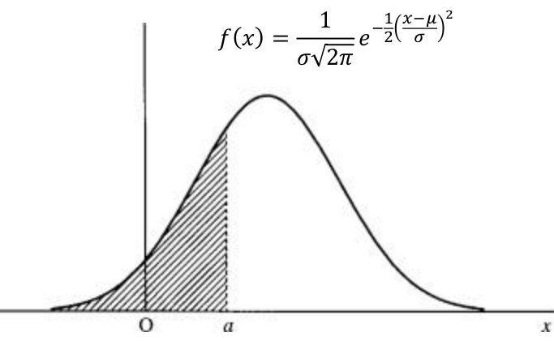

Section 25.9 Homework #14: Power Series
You may have found it surprising in the last homework that an improper integral from
\(r=R\) to
\(\infty \) could have a real-world application such as escape velocity. Actually, there is an example of an improper integral of the form
\(\int^a_{x=-\infty }{f\left(x\right)dx}\) which has an application a little closer to home.
Problem 25.9.0.1.
Define what it means for the improper integral
\begin{equation*}
\int^a_{x=-\infty }{f\left(x\right)dx}
\end{equation*}
to converge. What its value would be?
No doubt you have heard of a bell–shaped curve or perhaps have been in a statistics course that talks about
\(z\) values. What does any of this mean and what does it have to do with improper integrals? First, the bell–shaped curve is known as a normal (or gaussian) distribution and was developed by the mathematician Karl Gauss (1777 – 1855) to look at the probability that a measurement should deviate from the actual mean of a population. The fact that many measurements such as height, weight, IQ, etc. seem to be normally distributed is what makes this curve ubiquitous, and this is why you have probably heard of it in your travels. Specifically, a normal distribution with a mean of
\(\mu \) and a standard deviation of
\(\sigma \) has the equation
\(f\left(x\right)=\frac{1}{\sigma \sqrt{2\pi
}}e^{-\frac{1}{2}{\left(\frac{x-\mu }{\sigma }\right)}^2}\) as its probability density function. The fact that it is called a bell–shaped curve can be seen in the following graph.

This is called the probability density function because the probability that the random variable \(X\) takes on a value less than or equal to \(a\) is given by
\begin{equation*}
\frac{1}{\sigma
\sqrt{2\pi }}\int^a_{x=-\infty
}{e^{-\frac{1}{2}{\left(\frac{x-\mu }{\sigma
}\right)}^2}dx}
\end{equation*}
which is the area of the shaded region above. It is not easy to see, but Gauss cleverly showed that the area under this entire curve is exactly one, which is a requirement to be a probability density function.
Of course, the values of
\(\mu \) and
\(\sigma \) will affect the shape of the graph as seen below.

Of particular importance is the red curve where the mean \(\mu
=0\) and the standard deviation\(\sigma =1\text{.}\) Any random variable \(Z\) which has a normal distribution with probability density function \(f\left(z\right)=\frac{1}{\sqrt{2\pi }}e^{-\frac{z^2}{2}}\) is said to have a standard normal distribution and a result from probability theory says that if the random variable \(X\) is normally distributed with mean \(\mu \) and standard deviation \(\sigma \text{,}\) then \(Z=\frac{X-\mu }{\sigma }\) will have a standard normal distribution. We’ve said a lot here in the way of theory, so let’s provide a concrete example. It is widely accepted that IQ (intelligence quotient) is normally distributed with a mean \(\mu =100\) and standard deviation \(\sigma =15\text{.}\) It is also widely accepted that someone with an IQ of 140 or above is in the genius range. Suppose we chose someone at random. If we want to compute the probability that this person’s IQ is less than or equal to 140, then mathematically, we want to compute
\begin{equation}
Prob\left(X\le 140\right)=\frac{1}{15\sqrt{2\pi }}\int^{140}_{x=-\infty }{e^{-\frac{1}{2}{\left(\frac{x-100}{15}\right)}^2}}dx\tag{25.3}
\end{equation}
Unfortunately, none of our integration techniques will compute this integral exactly. In fact, there are no integration techniques that will do this. Let’s do what any person would do and see what the internet says. If we type this into a computer algebra system, we get
\begin{equation*}
\frac{1}{15\sqrt{2\pi }}\int^{140}_{x=-\infty }{e^{-\frac{1}{2}{\left(\frac{x-100}{15}\right)}^2}}dx\approx .99617
\end{equation*}
This says that the probability that this random person’s IQ is less than or equal to 140 is approximately .99617. Or alternatively, the probability that this person’s IQ is greater than 140 is
\(1-.99617=.00383\text{.}\) Said another way, a person with an IQ of 140 has a higher IQ than approximately
\(99.617\%\) of the entire human population.
We will get into approximating techniques later, but for now let’s talk about \(z\) scores and \(z\) tables. To compute the \(z\) score of the above IQ of 140, books and websites will say to compute
\begin{equation*}
z=\frac{140-100}{15}=\frac{8}{3}
\end{equation*}
In the old days, one would then look on a
\(z\) table and arrive at the approximation
\(.9961\text{.}\) Now you would input this
\(z\) score in an appropriate piece of software and obtain the same result. Why are you doing this? The following problem might shed some light
Problem 25.9.0.2.
Use the the substitution
\(z=\frac{x-100}{15}\) in
equation (25.3) to obtain
\begin{equation*}
\frac{1}{\sqrt{2\pi }}\int^{8/3}_{z=-\infty }{e^{-\frac{1}{2}z^2}}dz
\end{equation*}
This is what the approximation \(0.9961\) represents in the old \(z\) tables and in the statistical software. Since it is impossible to have a table for every possible normal distribution, the older tables and newer software packages have approximations for \(\frac{1}{\sqrt{2\pi }}\int^a_{z=-\infty
}{e^{-\frac{1}{2}z^2}}dz\text{.}\) It is expected that a person uses the above substitution to compute a \(z\) score and the table or software provides the approximation for the integral of the standard normal distribution.
Problem 25.9.0.3.
Actually, Wolfram Alpha provides the following output
\begin{equation*}
\frac{1}{\sqrt{2\pi }}\int^{8/3}_{z=-\infty }{e^{-\frac{1}{2}z^2}}dz=\frac{1}{2}\left({\erf \left(\frac{4\sqrt{2}}{3}\right)}+1\right)\approx .99617
\end{equation*}
where
\begin{equation*}
{\erf \left(a\right)}=\frac{2}{\sqrt{\pi }}\int^a_{t=0}{e^{-t^2}\dx{t}}
\end{equation*}
The name erf is short for error function and reminds us that Gauss determined this function to compute the probability of errors in measurements.
(a)
Use the substitution \(z=\sqrt{2}t\) to show that
\begin{equation*}
\frac{1}{\sqrt{2\pi }}\int^a_{z=0}{e^{-\frac{1}{2}z^2}}dz=\frac{1}{\sqrt{\pi }}\int^{a/\sqrt{2}}_{t=0}{e^{-t^2}}dt
\end{equation*}
(b)
Use the result of
Task 25.9.0.3.a and the fact that the total area under the standard normal curve is 1 to verify that Wolfram Alpha’s equation
\begin{equation*}
\frac{1}{\sqrt{2\pi }}\int^{8/3}_{z=-\infty }{e^{-\frac{1}{2}z^2}}dz=\frac{1}{2}\left({\erf \left(\frac{4\sqrt{2}}{3}\right)}+1\right)
\end{equation*}
Of course, the values for erf need to be approximated as well, so the above still does not provide an exact answer. This begs the question, how does one approximate integrals such as the above? There are several different ways. We will introduce the notion of a power series as one way. We will come back to
\(e^{-t^2}\text{,}\) but let’s start with something easier.
Imagine what integrating would be like if every function was a polynomial. If this were the case, then we wouldn’t have needed to learn so many integration techniques. For example, if we wanted to compute
\begin{equation*}
\int{\frac{x^2-1}{x-1}}\dx{x}
\end{equation*}
we could certainly use a trigonometric substitution, but an easier approach would be to rewrite this as
\begin{align*}
\int{\frac{{1-x}^2}{1-x}}\dx{x}=\int{\frac{(1-x)(1+x)}{1-x}}\dx{x}
\amp{}=\int{(1+x)}\dx{x}\\
\amp{}=x+\frac{x^2}{2}+C
\end{align*}
which would be perfectly valid provided \(x\neq 1\text{.}\) Alas, not every function is a polynomial. For example, consider \(\frac{1}{1-x}\text{.}\) Since \(\llimit{x}{1}{\frac{1}{1-x}}\) and no polynomial has this property, then \(f\left(x\right)=\frac{1}{1-x}\) cannot be written as a polynomial (even if we exclude certain points as we did above). However mathematicians realized that there are some things we can do. First notice that
\begin{equation*}
\left(1-x\right)\left(1+x+x^2+\dots \right)=\left(1+x+x^2+\dots \right)-\left(x+x^2+x^3+\dots \right)=1
\end{equation*}
As long as \(x\neq 1\text{,}\) we can divide by \(1-x\) to obtain
\begin{equation*}
\frac{1}{1-x}=1+x+x^2+\dots
\end{equation*}
so it would seem that we can represent \(\frac{1}{1-x}\) as an “infinite polynomial.” Is what we did legitimate? We certainly cannot substitute \(x=1\) in as we can’t divide by zero, but what about something like \(x=0.1\text{.}\) This would give us
\begin{equation*}
1+0.1+{\left(0.1\right)}^2+{\left(0.1\right)}^3+\dots =\frac{1}{1-0.1}
\end{equation*}
\begin{equation*}
1+0.1+0.01+0.001+\dots =\frac{1}{0.9}=\frac{1}{9/10}=\frac{10}{9}
\end{equation*}
\begin{equation*}
1.111\dots =\frac{10}{9}
\end{equation*}
\begin{equation*}
0.111\dots =\frac{1}{9}
\end{equation*}
Multiplying by \(3\text{,}\) gives use the familiar
\begin{equation*}
0.333\dots =\frac{1}{3}
\end{equation*}
Also notice that multiplying by \(9\) gives us
\begin{equation*}
0.999\dots
=1
\end{equation*}
which is a little more subtle, but is nonetheless as true as the decimal representation of \(\frac{1}{3}\) that you are familiar with. If nothing else, this says we must be a bit more careful about dealing with these infinite polynomials. For example, we can only stretch this representation so far. We already know that we can’t substitute \(x=1\) into \(1+x+x^2+\dots =1/(1-x)\text{.}\) What about \(x=2\text{?}\) Could we have
\begin{equation*}
1+2+2^2+\dots =\frac{1}{1-2}?
\end{equation*}
If you look at it, then this is silly as the left–hand side grows arbitrarily large and the right–hand side is \(-1\text{.}\) Let’s be a bit more careful utilizing limits. First notice that while writing
\begin{equation*}
\left(1-x\right)\left(1+x+x^2+\dots
\right)=\left(1+x+x^2+\dots \right)-\left(x+x^2+x^3+\dots
\right)=1
\end{equation*}
may be a bit questionable, we can certainly write
\begin{align*}
\left(1-x\right)\amp{}\left(1+x+x^2+\dots +x^N\right)\\
\amp{}=\left(1+x+x^2+\dots +x^N\right)-\left(x+x^2+x^3+\dots
+x^{N+1}\right)=1-x^{N+1}
\end{align*}
so we have
\begin{equation*}
1+x+x^2+\dots +x^N=\frac{1-x^{N+1}}{1+x}
\end{equation*}
\begin{equation*}
1+x+x^2+\dots =\limit{N}{\infty}{\left(1+x+x^2+\dots +x^N\right)}
=\limit{N}{\infty}{\left( \frac{1-x^N}{1-x}\right)
}
\end{equation*}
As long as \(\left|x\right|\lt{}1\text{,}\) then \(\limit{N}{\infty}{ x^N}=0\text{,}\) so that for \(-1\lt{}x\lt{}1\text{,}\) we have
\begin{equation*}
1+x+x^2+\dots =\limit{N}{\infty}{(1+x+x^2+\dots +x^N)}
=\limit{N}{\infty}{\frac{1-x^N}{1-x}}=\frac{1}{1-x}\text{.}
\end{equation*}
The sum \(1+x+x^2+\dots \) is called the geometric series since the ratio two consecutive terms \(\frac{x^{k+1}}{x^k}\) is constantly equal to \(x\) and these were studied by mathematicians before the invention of calculus. As such, these infinite polynomials were called power series.
Mathematicians in the 18\({}^{th}\) century were certainly aware of the geometric series and such limitations, but it didn’t stop them from exploiting this powerful tool in applying the ``new’’ calculus. For example, suppose we wanted to compute
\begin{equation*}
\int{\frac{1}{1+x^2}dx}
\end{equation*}
We already know that this is \({\arctan (x)}+C\text{,}\) but suppose we do the following
\begin{align*}
\frac{1}{1+x^2}=\frac{1}{1-\left(-x^2\right)}
\amp{}=1+\left(-x^2\right)+{\left(-x^2\right)}^2+{\left(-x^2\right)}^3+\dots\\
\amp{}=1-x^2+x^4-x^6+\dots
\end{align*}
Thus, we have
\begin{align*}
>{\arctan \left(x\right)\
}+C=\int{\frac{1}{1+x^2}dx}\amp{}=\int{\left(1-x^2+x^4-x^6+\dots
\right)dx}\\
\amp{}=x-\frac{x^3}{3}+\frac{x^5}{5}-\frac{x^7}{7}+\dots
\end{align*}
Setting \(x=0\text{,}\) we get
\begin{align*}
{\arctan \left(0\right)\
}+C\amp{}=0-\frac{0^3}{3}+\frac{0^5}{5}-\frac{0^6}{6}+\dots =0\\
0+C\amp{}=0\\
C\amp{}=0
\end{align*}
Thus, we have a power series representation for the function \({\arctan (x)}\text{.}\)
\begin{equation*}
{\arctan (x)\
}=x-\frac{x^3}{3}+\frac{x^5}{5}-\frac{x^7}{7}+\dots
\end{equation*}
If we substitute \(x=1\) into here (which is dubious, since we couldn’t substitute it into the original \(\frac{1}{1-x}\text{,}\) we get
\begin{equation*}
\frac{\pi }{4}={\arctan \left(1\right)}=1-\frac{1}{3}+\frac{1}{5}-\frac{1}{7}+\frac{1}{9}-\dots
\end{equation*}
which provides a way to approximate \(\pi \) to whatever degree of accuracy we wish. Again, this approach to calculus is full of subtleties and dangers, but it did not stop mathematicians from trying to represent non–polynomial functions as power series.
Problem 25.9.0.4.
Mimic the above techniques to find a power series representation for the following functions.
(a)
\(\frac{1}{{\left(1-x\right)}^2}\)
(b)
(c)
Interestingly, we can get power series representation for the natural logarithm from the geometric series, but getting one for the exponential function is a bit more problematic. To do this, we will go back to basic principles. Recall from Calculus I that the natural exponential function \(y=e^x\) came from the need to solve the following initial value problem
\begin{align*}
\frac{dy}{dx}=y\amp{}\amp{} y\left(0\right)=1
\end{align*}
This is the unique solution to that IVP. Suppose we tried to write that solution as a power series, namely
\begin{equation*}
y=a_0+a_1x+a_2x^2+a_3x^3+\dots
\end{equation*}
where \(a_0,a_1,a_2,a_3,\dots \) are as yet to be determined coefficients. Differentiating, we get
\begin{equation*}
dy=1a_1dx+2a_2xdx+3a_3x^2dx+\dots
\end{equation*}
\begin{equation*}
\frac{dy}{dx}={1a}_1+2a_2x+3a_3x^2+\dots
\end{equation*}
Substituting this into \(\frac{dy}{dx}=y\text{,}\) we have
\begin{equation*}
{1a}_1+2a_2x+3a_3x^2+\dots =a_0+a_1x+a_2x^2+a_3x^3+\dots
\end{equation*}
Since these must be equal for all \(x\text{,}\) then the coefficients must be equal. This leads to
\begin{equation*}
1a_1=a_0
\end{equation*}
\begin{equation*}
2a_2=a_1
\end{equation*}
\begin{equation*}
3a_3=a_2
\end{equation*}
\begin{equation*}
\vdots
\end{equation*}
\begin{equation*}
na_n=a_{n-1}
\end{equation*}
\begin{equation*}
\vdots
\end{equation*}
Rewriting this pattern, we get
\begin{equation*}
a_1=\frac{1}{1}a_0
\end{equation*}
\begin{equation*}
a_2=\frac{1}{2}a_1=\frac{1}{2\cdot 1}a_0
\end{equation*}
\begin{equation*}
a_3=\frac{1}{3}a_2=\frac{1}{3}\left(\frac{1}{2\cdot 1}a_0\right)=\frac{1}{3\cdot 2\cdot 1}a_0
\end{equation*}
\begin{equation*}
\vdots
\end{equation*}
\begin{equation*}
a_n=\frac{1}{n}a_{n-1}=\dots =\frac{1}{n\left(n-1\right)\left(n-2\right)\cdots 2\cdot 1}a_0
\end{equation*}
\begin{equation*}
\vdots
\end{equation*}
If we adopt the notation \(n!\) (read \(n\) factorial) to be \(n!=n\left(n-1\right)\left(n-2\right)\cdots 2\cdot
1,\)then all this says that the power series
\begin{equation*}
y=a_0+\frac{1}{1!}a_0x+\frac{1}{2!}a_0x^2+\frac{1}{3!}a_0x^3+\frac{1}{4!}a_0x^4+\dots
\end{equation*}
\begin{equation*}
=a_0\left(1+\frac{1}{1!}x+\frac{1}{2!}x^2+\frac{1}{3!}x^3+\frac{1}{4!}x^4+\dots \right)
\end{equation*}
satisfies \(\frac{dy}{dx}=y\text{.}\) If we apply our initial condition \(y\left(0\right)=1\text{,}\) we get
\begin{equation*}
1=y\left(0\right)=a_0\left(1+0+0+0+\dots \right)=a_0
\end{equation*}
Thus
\begin{equation*}
y=1+\frac{1}{1!}x+\frac{1}{2!}x^2+\frac{1}{3!}x^3+\frac{1}{4!}x^4+\dots
\end{equation*}
satisfies the IVP \(\frac{dy}{dx}=y\
y\left(0\right)=1\text{.}\) But we already knew that the unique solution is \(y=e^x\) so we have the power series for \(e^x\text{,}\) namely
\begin{equation*}
e^x=1+\frac{1}{1!}x+\frac{1}{2!}x^2+\frac{1}{3!}x^3+\frac{1}{4!}x^4+\dots
\end{equation*}
To test this, let’s substitute in \(x=1\text{.}\) We get
\begin{equation*}
e=1+\frac{1}{1!}+\frac{1}{2!}+\frac{1}{3!}+\frac{1}{4!}+\dots
\end{equation*}
We can’t add up infinitely many terms like this, but let’s add the terms
\begin{equation*}
1+\frac{1}{1!}+\frac{1}{2!}+\frac{1}{3!}+\frac{1}{4!}+\frac{1}{5!}+\frac{1}{6!}+\frac{1}{7!}+\frac{1}{8!}+\frac{1}{9!}+\frac{1}{10!}
\end{equation*}
to see if we get a reasonable approximation for \(e\text{.}\)
\begin{align*}
e\amp{}\approx 2.7182818011463845\\
\amp{}= 1+\frac{1}{1!}+\frac{1}{2!}+\frac{1}{3!}+\frac{1}{4!}+\frac{1}{5!}+\frac{1}{6!}+\frac{1}{7!}+\frac{1}{8!}+\frac{1}{9!}+\frac{1}{10!}
\end{align*}
Comparing this to the approximation for \(e\) given on a calculator \(2.71828182846\text{,}\) we see this is accurate to 7 decimal places. Adding more terms would get us even more accuracy. In fact, for any real number \(x\text{,}\) we have
\begin{equation*}
\limit{N}{\infty}{ \left(1+\frac{1}{1!}x+\frac{1}{2!}x^2+\frac{1}{3!}x^3+\frac{1}{4!}x^4+\dots +\frac{1}{N!}x^N\right)}=e^x
\end{equation*}
which is different than the limitation \(-1\lt{}x\lt{}1\) we had for the geometric series. The entire study of power series is more subtle than we’ve done so far, but for now, let’s go with the fact that we can represent
\begin{equation*}
e^x=1+\frac{1}{1!}x+\frac{1}{2!}x^2+\frac{1}{3!}x^3+\frac{1}{4!}x^4+\dots
\end{equation*}
for any real number \(x\text{.}\) Let’s apply this to our error function
\begin{equation*}
{\erf \left(a\right)}=\frac{2}{\sqrt{\pi
}}\int^a_{t=0}{e^{-t^2}\dx{t}}
\end{equation*}
Problem 25.9.0.5.
(a)
Use the power series
\begin{equation*}
e^x=1+\frac{1}{1!}x+\frac{1}{2!}x^2+\frac{1}{3!}x^3+\frac{1}{4!}x^4+\dots
\end{equation*}
to obtain a power series for \(e^{-t^2}\) and use this to show
\begin{align*}
{\erf \left(a\right)}\amp{}=\frac{2}{\sqrt{\pi}}\int^a_{t=0}{e^{-t^2}\dx{t}}\\
\amp{}=\frac{2}{\sqrt{\pi}}\left(a-\frac{1}{1!\cdot3}a^3
+ \frac{1}{2!\cdot 5}a^5 - \frac{1}{3!\cdot7}a^7 +
\frac{1}{4!\cdot 9}a^9-\dots \right)
\end{align*}
(b)
Add the first ten terms of the series you obtained in part a with
\(a=1\) to obtain an approximation for
\({\erf
\left(1\right)}\text{.}\) How does your calculation compare to the approximate answer given by Wolfram Alpha which is
\(.8427007929\)
As you can see, power series coupled with the new calculus became (and still is) a powerful tool. As people utilized it more, issues about legitimacy came into play, but for now and in the next homework, we won’t worry about the nuances and just see what it can get us.